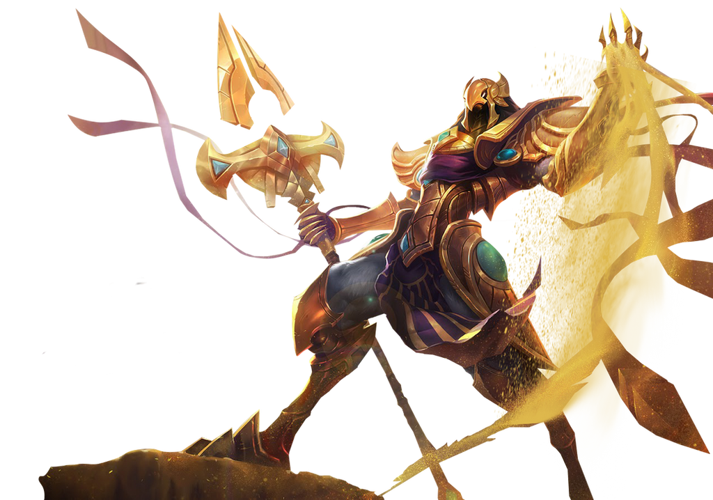
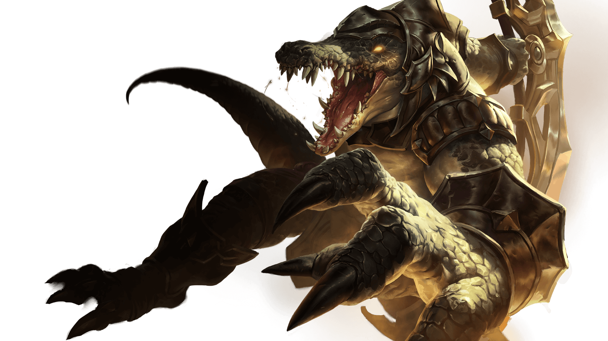
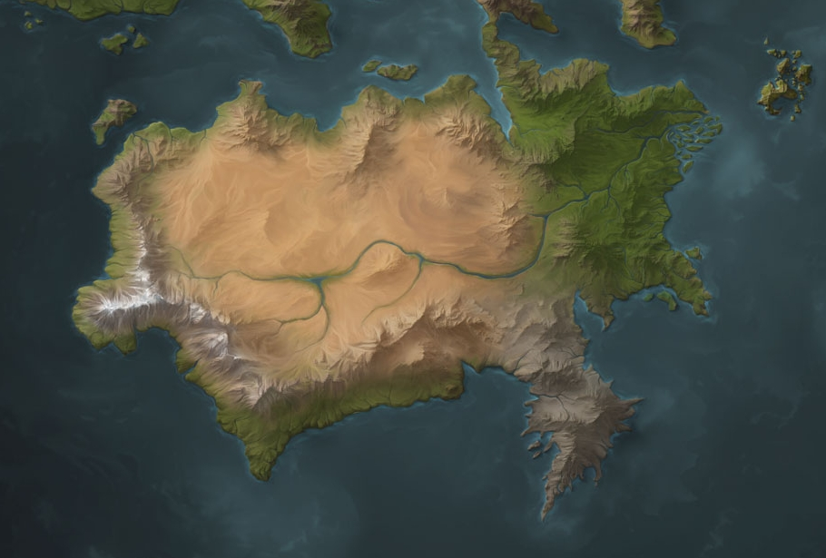
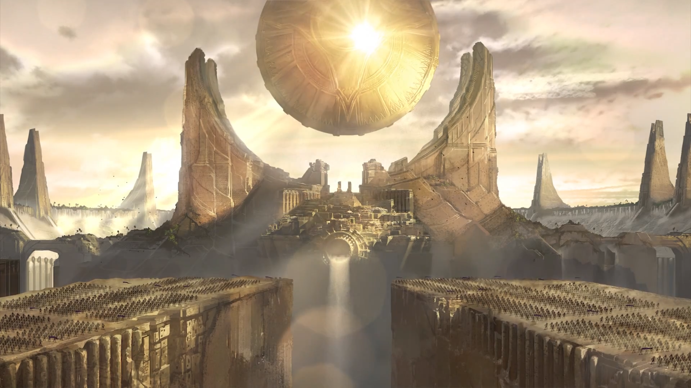
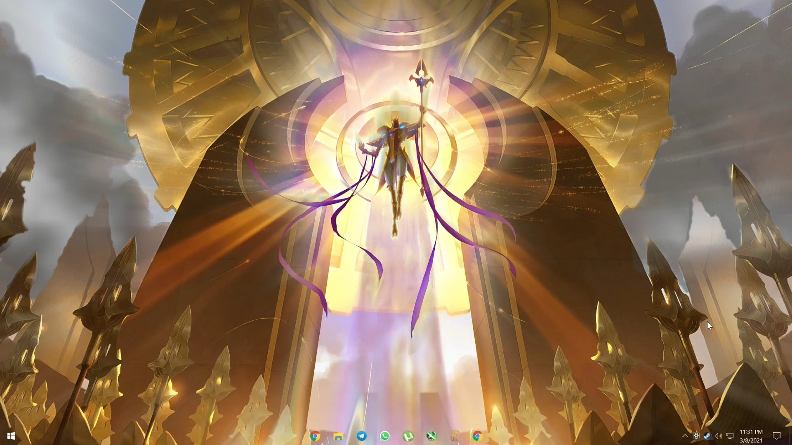
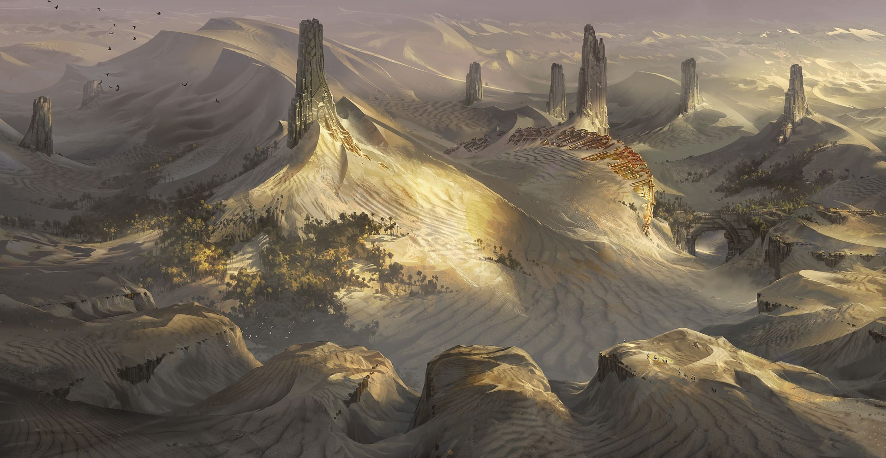

Personagens
Azir
Taliyah

Renekton
História
O império de Shurima já foi uma civilização próspera que ocupava um continente inteiro. Forjado pelos poderosos deuses-guerreiros do Batalhão de Ascendentes em uma era perdida, ele uniu todos os povos díspares do sul e consolidou uma paz duradoura entre eles. Poucos ousavam se rebelar – e aqueles que o faziam, como a nação amaldiçoada de Icathia, eram esmagados sem misericórdia. Entretanto, após milhares de anos de crescimento e prosperidade, a Ascensão fracassada do último imperador de Shurima deixou a capital em ruínas, e as histórias da antiga glória do império se tornaram pouco mais do que mitos. Agora, a maioria dos habitantes nômades dos desertos de Shurima lutam para conseguir se sustentar nesta terra impiedosa. Alguns grupos construíram pequenos postos para defender os raros oásis, enquanto outros mergulham em catacumbas há muito perdidas em busca das incontáveis fortunas que dizem estar aguardando lá embaixo. Também há quem leve uma vida de mercenário, trocando serviços por moedas antes de desaparecer de novo na vastidão sem lei. Mesmo assim, alguns ainda ousam sonhar com o retorno dos tempos antigos. Recentemente, as tribos andaram se agitando, fomentadas pelos sussurros vindos do coração do deserto sobre o retorno do imperador Azir, que os levará a uma nova era de maravilhas.
Localização
   